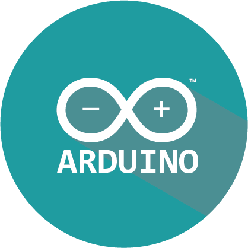
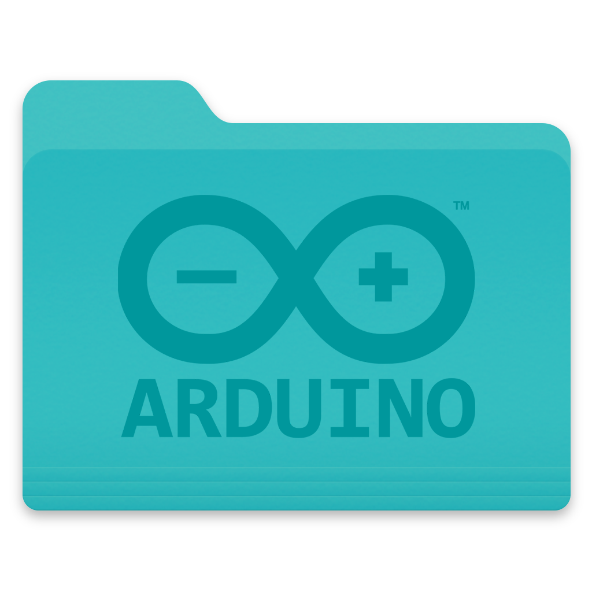
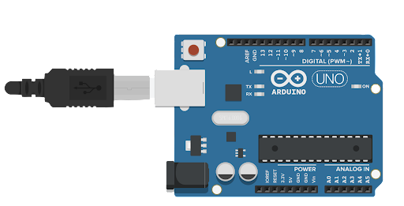

Introducción a Arduino

DESCARGA ARDUINO AQUÍ

COMPRA ARDUINO AQUÍ

¿Qué es Arduino?
Arduino es una plataforma de creación de electrónica de código abierto, la cual está basada en hardware y software libre, flexible y fácil de utilizar para los creadores y desarrolladores. Esta plataforma permite crear diferentes tipos de microordenadores de una sola placa a los que la comunidad de creadores puede darles diferentes tipos de uso.
El Arduino es una placa basada en un microcontrolador ATMEL. Los microcontroladores son circuitos integrados en los que se pueden grabar instrucciones, las cuales las escribes con el lenguaje de programación que puedes utilizar en el entorno Arduino IDE. Estas instrucciones permiten crear programas que interactúan con los circuitos de la placa.
El microcontrolador de Arduino posee lo que se llama una interfaz de entrada, que es una conexión en la que podemos conectar en la placa diferentes tipos de periféricos. La información de estos periféricos que conectes se trasladará al microcontrolador, el cual se encargará de procesar los datos que le lleguen a través de ellos.
El tipo de periféricos que puedas utilizar para enviar datos al microcontrolador depende en gran medida de qué uso le estés pensando dar. Pueden ser cámaras para obtener imágenes, teclados para introducir datos, o diferentes tipos de sensores.
También cuenta con una interfaz de salida, que es la que se encarga de llevar la información que se ha procesado en el Arduino a otros periféricos. Estos periféricos pueden ser pantallas o altavoces en los que reproducir los datos procesados, pero también pueden ser otras placas o controladores.